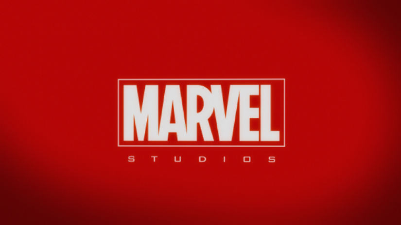
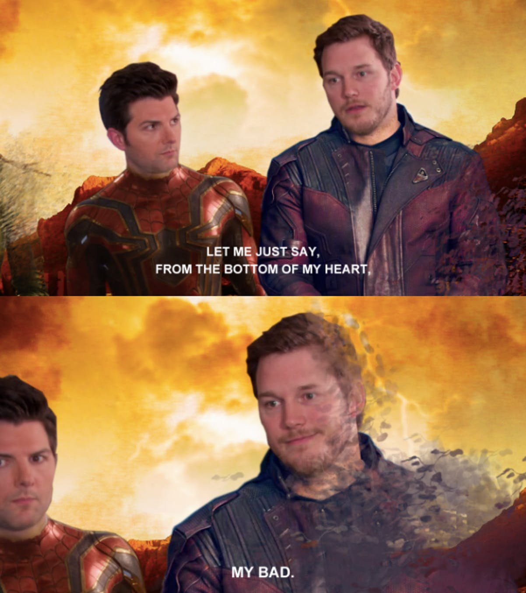
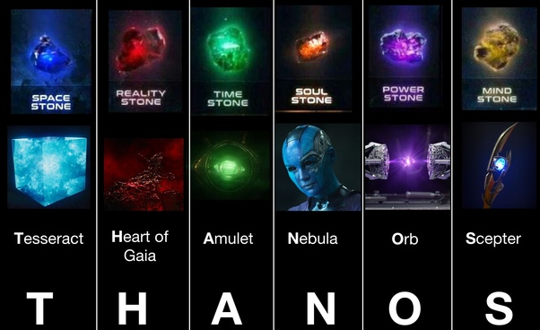

This is about a website which is very amazing and will blow your mind when you look at it.GoCode is very good and marvel is also the best.Thor really did put on, and memes are all over.
 Marvel phase 4 movies are coming such as gotg 3(Guardians of the Galaxy 3) and also Thor 4(even though this one is not confirmed)Lets not forget Black Widow Movie and even the Black Panther 2.Now that all the infinity stones were gone as it was shown in endgame, things are going to be interesting.  Before when Thanos was alive he was a threat to the whole universe(actually half but whatever.)Here is a link if you want to know the origins of him.Anyways he had the power of all the infinity stones once and it definitely had a big impact.But now things will be in peace well at least for the universe as there are many villians out there.